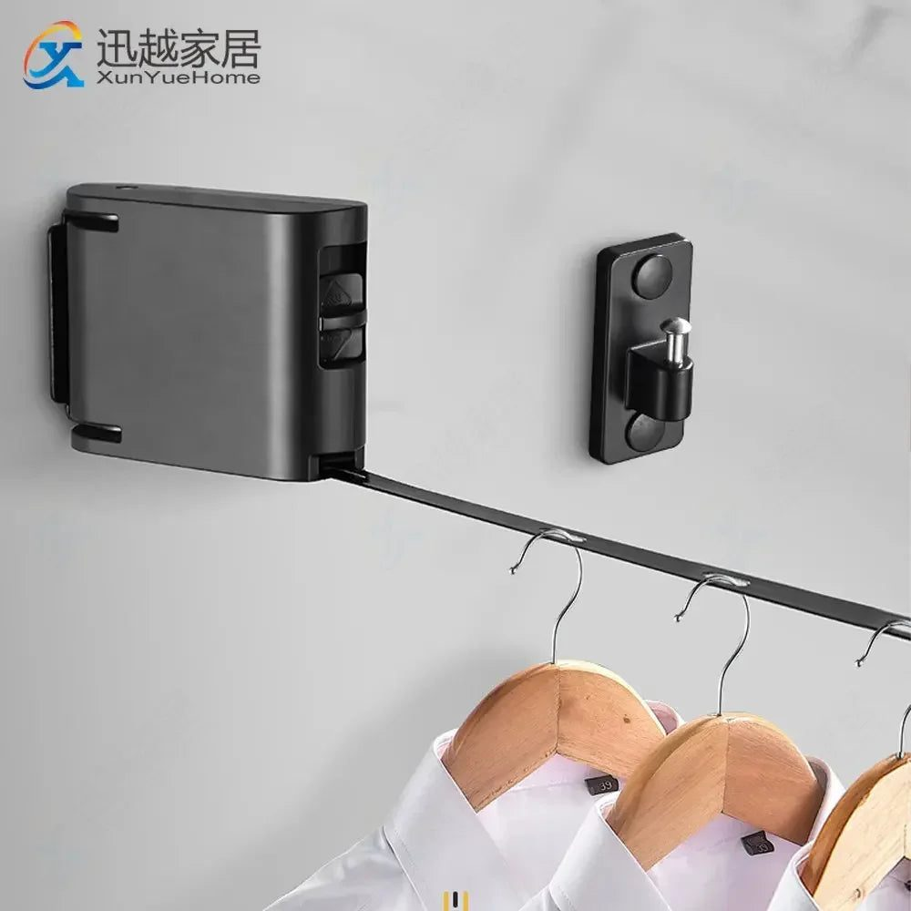
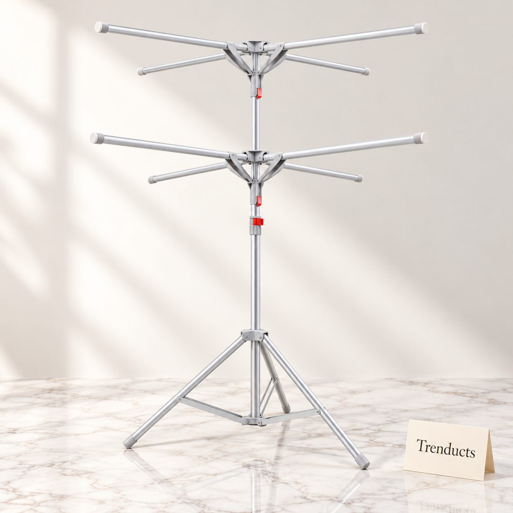
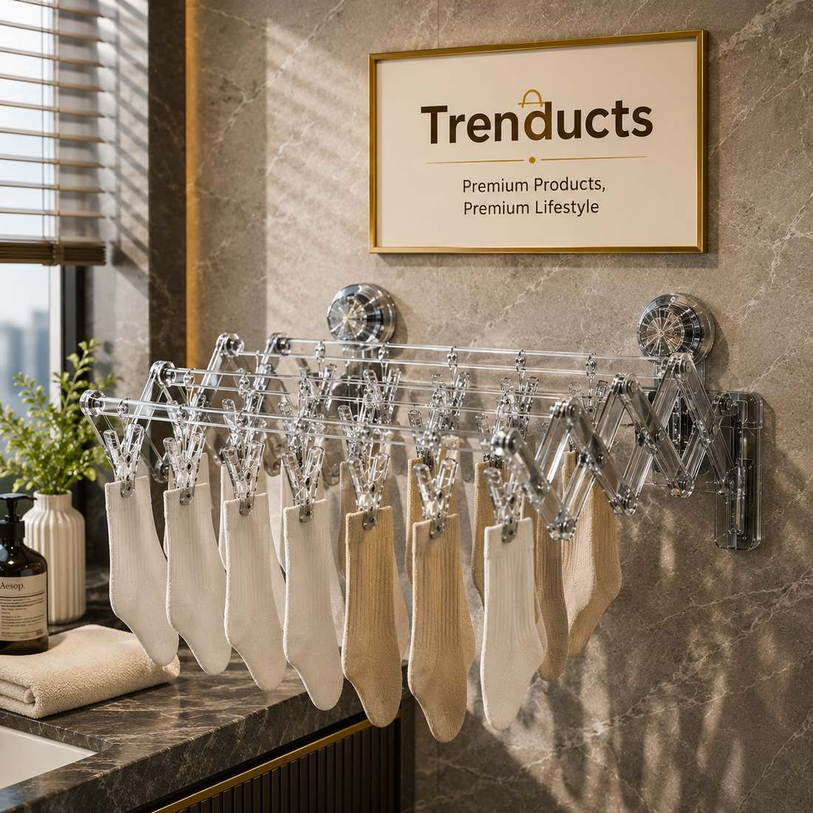

Practical ways to dry laundry in Pakistani flats and apartments with little outdoor space, from wall-mounted racks to monsoon and smog tips.



Houses in Pakistan traditionally had a roof or a courtyard where clothes dried on long lines in a few hours of sun. Apartment living has changed that for many families in Karachi, Lahore and Islamabad. A flat might have one narrow balcony, sometimes none, and building rules or neighbours may frown on clothes hanging over the railing.
Laundry still needs to dry, though, and doing it well in a small space takes a bit of planning. Here are ideas that work in real flats.
Floor space in a small balcony or utility area is precious. Wall-mounted retractable racks fold flat against the wall when not in use and pull out when you need them. They hold a full load of shirts and shalwar kameez without taking up any floor, and they leave the balcony usable for a chair or plants the rest of the time.
Before installing one, check the wall material and use the right anchors. A full load of wet clothes is heavier than it looks, and a rack that pulls out of the plaster is a messy problem.
Freestanding tripod or folding racks are ideal if you rent and cannot drill, or if you like moving the laundry to follow the sun. They can stand on the balcony on clear days and come inside near a window or fan when the weather turns. When folded, they slip behind a door or into a narrow gap beside the washing machine.
Socks, handkerchiefs, baby clothes and dupattas are the items that clutter a rack and fall to the floor. Clip hangers with many pegs or suction-mounted sock racks keep them together. They also make sorting easier, because all the socks come off in one go.
In monsoon season, especially in Karachi and Lahore, clothes can take a whole day to dry and may start to smell musty. Dry indoors near a window with a ceiling or pedestal fan running. Avoid crowding the rack. If clothes still smell damp, they need more time, not folding; damp clothes in a cupboard lead to mildew.
In Lahore and other Punjab cities, winter smog can leave a grey film and a smell on clothes dried outdoors. On heavy smog days, dry indoors with windows closed and a fan running, or at least bring clothes inside by early afternoon before the evening haze builds.
A balcony that is only a laundry area quickly feels like a storeroom. Folding racks away when not in use, keeping a basket for pegs and choosing racks in a neat finish all help the space stay somewhere you actually want to sit with a cup of chai in the evening.
Without a separate laundry room, finished clothes often sit in a heap on a bed. Fold or hang items straight off the rack while they are still slightly warm; creases fall out more easily, and many cotton clothes then need only a quick press. Keep a fixed basket for clothes that need ironing so they do not mix with clean folded items, and tackle it in one sitting each week.
For space-saving options, the smart home gadgets range at trenducts.pk includes wall-mounted retractable racks, foldable standing racks and sock clip hangers, delivered across Pakistan.
In a small flat, laundry works best little and often. Running smaller loads more frequently means each load dries in the space you have, rather than one enormous Sunday wash that takes over the whole home. Combine that with a wall rack, a folding rack and a clip hanger, and even the smallest balcony becomes enough.